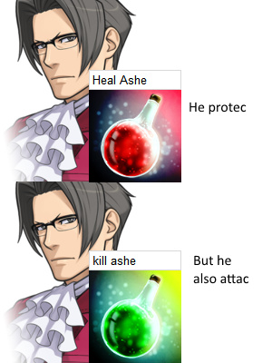

Actually I’d like the odds to be 60% Good, 30% Evil, and 10% Scorned.
Since Scorned = Awesome
And King = Awesome
So therefore Begrudged King = Super awesome
Plus Scorned is actually interesting unlike Alchemist

Actually I’d like the odds to be 60% Good, 30% Evil, and 10% Scorned.
Since Scorned = Awesome
And King = Awesome
So therefore Begrudged King = Super awesome
Plus Scorned is actually interesting unlike Alchemist
But if they’re a scummy Neutral you’d just hang them
Eh, 
My idea for an unseen buff.
Original assassin always promotes to mastermind.
Would only the starting Assassin ever be promoted?
Yes. So if mms dies day two and three, for example, then no third one. But I don’t think that has ever happened, but mastermind frequently dies first.
I support it. One backup seems like plenty.
Can we get rid of being unable to execute the king until day 4? It’s stupid how you could literally claim EK and be untouchable for 3 days. I’d prefer some punishment for GK Lynch like in ToL, although not negating the day phase.
I’ll be trialing something in my game. We just to not be dicks and Lynch king day two.
My preferred idea was they lost protection if decide fate was used
What if the Alchs abilities remained the same but her wincon was changed to
“Survive to see the blue dragon lose.” ?
It’d eliminate the problem of D1 Alchemist claims and would force the Alchs to have to fake claim
** if this were the case alchemist would probably have to be unique also
It should.
Otherwise BD get 2-3 bonus enemy.
Then why would they ever heal?
Yup
But Alchs hard siding bd early seem to be making life tough on scum
To help prove their fake claim?
eye starts twitching
No. It wasn’t interesting.
It wasn’t
Ici was the alchemist during the plague thing  He’s a reliable source!
He’s a reliable source!
Cowardly has no other way for BD to remove it.
